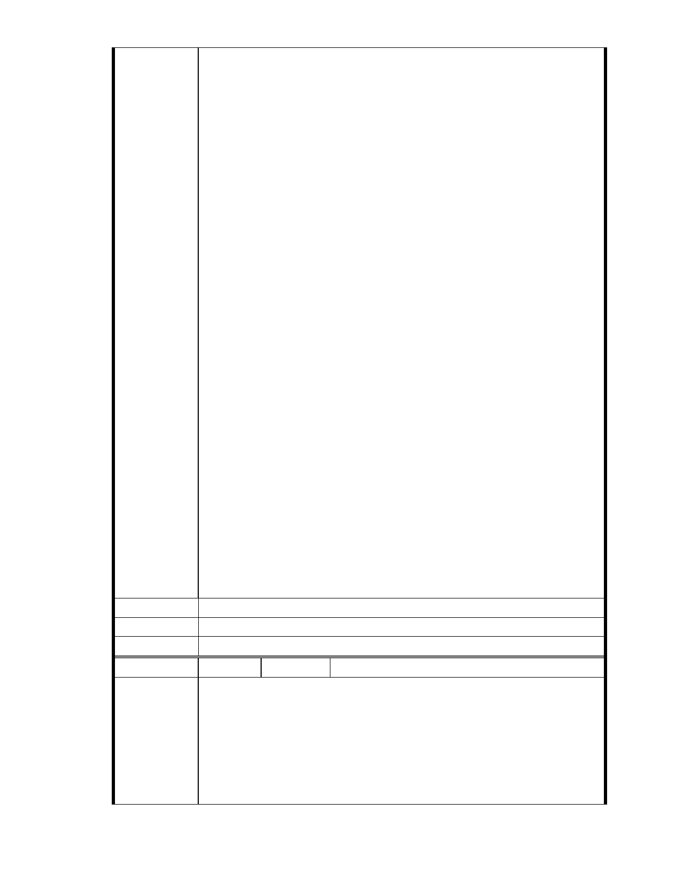

大家也許還有記憶，兩年前里長選舉時，大湖里其中一位里長的競選文
宣上曾提到爭取興建 B 號滯洪池一事，只不過這件事後來也不了了之，
大家可能也都忘記了．最近因慈濟申請案，又不斷有人再提淹水問題，
心裡面在想--既然有人還不斷再擔心淹水的事情，那當初的 B 號滯洪池計
劃為什麼會中途夭折呢？這促使我想去進一步了解 B 號滯洪池一事．結
果我得到的訊息是，B 號滯洪池預定地須要徵收一些私有土地，居民認
為要徵收我的土地，總得有需要再來徵收啊！於是市府相關單位重新針
對「大湖地區經過大溝溪水域整治、以及整個大台北地區防洪排水設施
設置以後，是否仍然須要在大湖山莊街上方再做一個滯洪池」來進行評
估，最後的結論是多做一個滯洪池當然大家比較放心，但是不做也沒問
題，基於這個評估結果，就是現在大家看到的，B 號滯洪池至今沒被興
建。
了解這情形後，我再回頭來思考，這幾次慈濟辦的說明會，為何仍不斷
有人以淹水為由反對慈濟申請變更，甚至有人要求慈濟把整個園區挖成
湖，這想法明明跟「B 號滯洪池評估不須要興建」是互相矛盾的啊？
照說，當年淹水的是處於大溝溪、米粉坑溪集水區的大湖山莊街．這裡
與慈濟基地中間隔了一座山，若大家擔心大湖地區會再淹水，應該是要
在大湖山莊街上游增加滯洪池才對不是嗎？因為滯洪池設在慈濟這邊，
大溝溪的水不可能越過山稜線滯存到慈濟這邊的滯洪池啊！所以，要進
一步解除大湖山莊街再次淹水疑慮，B 號滯洪池的興建才是最有效方案。
更何況，慈濟申請計劃中，有 65％的基地會用來設置生態滯洪池及透水
綠地，這絕對比現況的柏油鋪面跟鐵皮屋，更能改善大湖的整體滯洪功
能。所以支持慈濟申請案通過，讓牛稠溪得水滯留在慈濟園區，另方面 B
號滯洪池也真的能夠興建來滯留更多的大溝溪、米粉坑溪的水量，這才
是兩全其美的方案。
建議辦法
市 府 說 明 相關陳情意見將納入本案審查人民意見，依法定程序辦理。
委 員 會 決 議 同編號 1。
編 號 252 陳情人 林正雄
敬愛的主席與都發局長官及審議委員
我是內湖居民，我在中研院從事研究。慈濟內湖園區改善案爭論已久，
看到反對居民主要的訴求在於水的安全，他們的文宣主述不要再淹水
陳情理由
了，認為慈濟的開發會造成大湖里排水的安全。
為了自己居住的安全性，是非常可理解的，不然這塊園區是慈濟的地，
應該是市府跟慈濟就規劃與回饋做議題討論即可。所以我去了解為何大
- 296 -